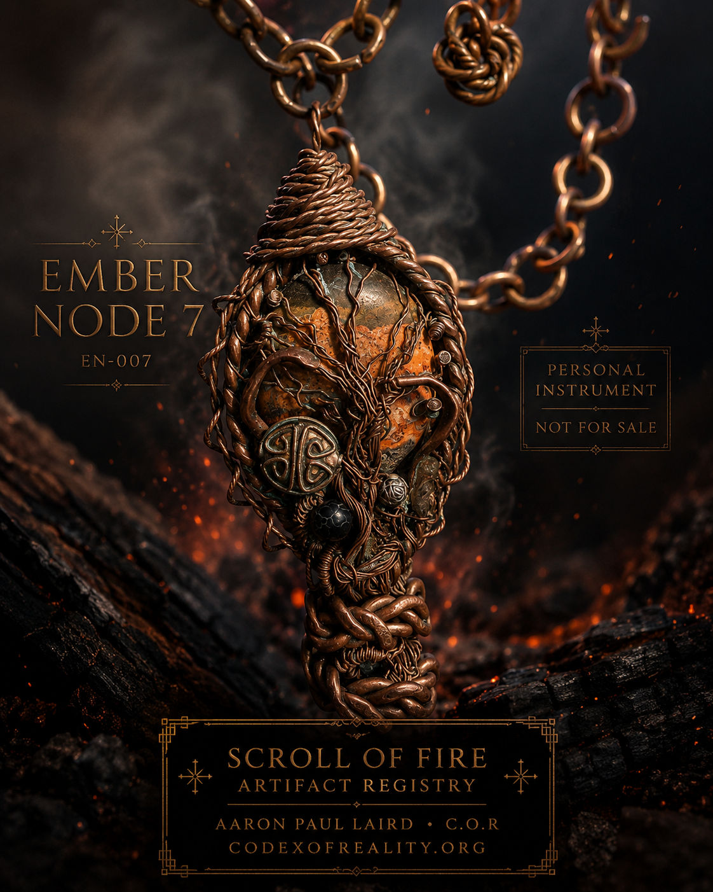

Track rhythm through the Remnant 13 Moons calendar, moon phase, symbolic day reading, and seasonal witness practice.
Read today’s mirror →Codex 0 · ΨΩ · Living Framework
Scroll of Fire — Codex of Reality
Observe. Breathe. Align. Return.
A living codex connecting the Remnant 13 Moons calendar, witness practice, symbolic theory, Frequency Governance, Covenant Caravan, Genesis Oracle, Living Technology, and the physical Artifact Registry.
☾ 13 Moons
963 Frequency
☲ Artifacts
☷ Caravan
Ξ Witness
One living framework:
memory, rhythm, resonance, witness, movement, theory, craft, and physical artifacts gathered into a navigable archive.
What This Is
A Living Codex, Calendar, Forge, Caravan, and Witness System
Codex of Reality is not a static website. It is a growing network of tools, writings, artifacts, field notes, symbolic language, daily practice, and real-world movement.
Use Frequency Governance for carrier tones, structured listening, visual practice, and focused reflection.
Open the console →Explore handcrafted copper, stone, glass, and Living Technology pieces entered into the Artifact Registry.
Enter the registry →Visual Manifestation
60-Second Codex Entry
Use the moving field as a simple mirror. Let the page slow the room before choosing where to go next.
Inhale 4Gather attention.
Hold 2Name the pattern.
Exhale 6Release static.
ReturnMove with clarity.
Living Road System
The Covenant Caravan
A 21st-century traveling artisan path built around family, craft, education, animals, water, food, shelter, movement, and lawful long-distance transition.
1StabilizeMap money, food, shelter, family needs, animal care, legal boundaries, and first safe movement.
2PracticeTrain the daily rhythm: water, fire, food, repair, teaching, craft, and sleep.
3BuildPrepare the buggy, tool chest, forge kit, field kitchen, storage, and winter plan.
4TradeEarn through flooring, copper work, artifacts, repair, writing, teaching, and markets.
5MoveTravel with route scouting, animal welfare, rest days, logs, and community anchors.
Featured Daily System
Remnant 13 Moons
The living calendar combines moon phase, seasonal rhythm, calendar position, symbolic reading, field layers, and a daily witness practice.
It is the strongest recurring entry point into the Codex.

Artifact Registry
Living Technology Archive
Personal instruments, gifted artifacts, available works, active builds, and future releases. This is where the Scroll becomes physical.

HL-001HaLevanahRegistry valuation · $222

TS-001Time Shard RingRegistry valuation · $369

EN-007Ember Node 7Personal instrument

TN-001Tiger Node RingGifted artifact

CV-067Covenant 67Artifact value · $67.67
Witness Path
The Daily Return
Look at what is happening before rushing to name it.
Give the pattern a clean word, symbol, moon marker, or ledger note.
Breathe, record, act, and bring the body back into the present field.
Codex Equation
The Living Framework
Reality = (Energy × Information × Intention × Memory × Flow)Consciousness
The equation is presented as the Codex’s symbolic organizing framework: a way to track pattern, breath, memory, intention, relation, movement, and witness.
Core Gates
Enter Through the Main Systems
Start
A clean doorway for first-time visitors who need orientation.
Begin →13 Moons
The daily rhythm engine: moon, element, witness, calendar, mirror, and return.
Open 13 Moons →Covenant Caravan
The road system: family, craft, horses, shelter, trade, discipline, and transition.
Open Caravan →Frequency Governance
Carrier tones, harmonic layers, visual practice, and structured listening.
Open Frequencies →Genesis Oracle
A symbolic mirror for language, pattern, reflection, and daily witness.
Open Oracle →Artifact Registry
Copper, stone, glass, named artifacts, valuations, gifts, and archive pieces.
View Artifacts →